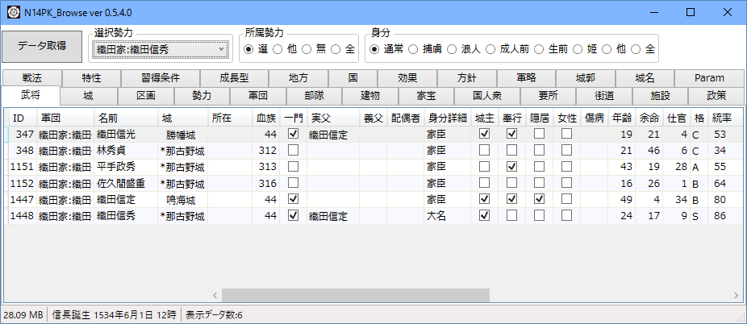

通称パパツールと呼ばれる、信長の野望 創造 用のメモリエディタとなります。
開発者ご当人開発継続放棄、及び、ダウンロード先が安定しないため、再転載配布物となります。
ソースが同封されていますので、ゲームの外部プロセスでのメモリエディタの作り方の参考になるかと思います。
上記ファイルをダウンロードして、適当な場所に一式をコピーする。
ゲーム開始後(ゲーム起動ではなく、実際にゲームの戦術画面(全国画面)に入った後、「データ取得」のボタンを押す。

コピーしたファイルを削除。